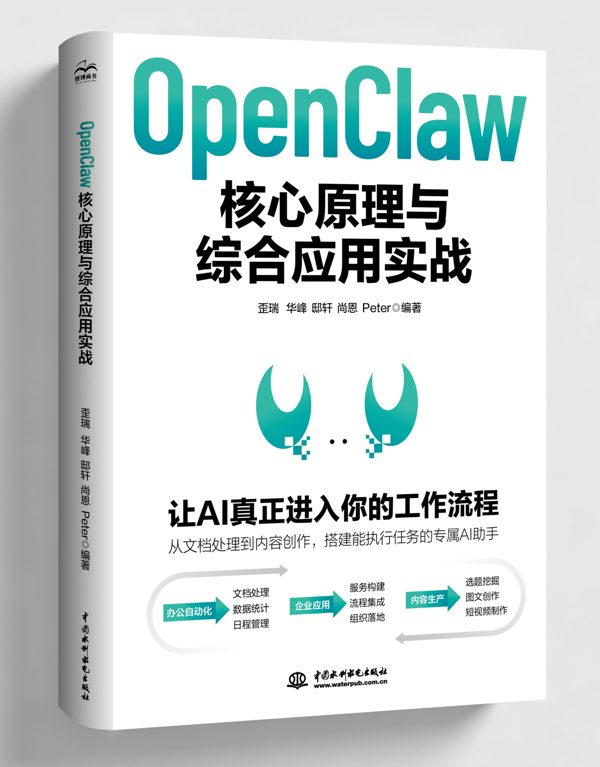

合著者
《OpenClaw 核心原理与综合应用实战》
让AI真正进入你的工作流程
从文档处理到内容创作，搭建能执行任务的专属AI助手。
深圳 · 鹏城 ｜ AI 效能教练
教系统不教工具，把AI变成数字员工
500强上市公司AI效能负责人 · 12年数智化转型 · Kanban官方指南中文译者
新书合著《OpenClaw 核心原理与综合应用实战》New Book

让AI真正进入你的工作流程
从文档处理到内容创作，搭建能执行任务的专属AI助手。
About
我是安迪，在深圳一家500强上市公司负责AI效能部门。十年前我写代码，后来带团队，做敏捷、做精益看板，Kanban官方指南的中文译者就是我。我不是那种在PPT上讲AI的人，是在业务线上真刀真枪把AI落进去的人。
现在我在做一件事：帮非IT背景的人，从用AI聊天，走到用AI干活，把AI从聊天工具变成数字员工。我有个品牌叫合一，名字来自我女儿。这里没有老师，有的只是教练。
未来AI不属于技术人员，属于敢用的人。
Identity
Projects
非IT职场人持续交流AI落地的地方。定下三条门槛：利他、实践、分享；群里有WorkBuddy玩法、OPC认证库、教练答疑和群友真实经验。无裂变无推广，靠口碑自然增长到2000人。
基于腾讯WorkBuddy的21天带练打卡实战训练营，帮非IT背景职场人从“用AI聊天”走到“用AI干活”。设计了6节主课+2个实操项目+全套SOP手册，6位教练进群全程答疑，每天的任务用学员自己的真实工作当练习题。第4期结营回收40份问卷，绝大多数选「非常满意」；完成打卡免费升级年度陪伴群。
自建AI多智能体内容创作流水线：50个skills的Obsidian知识库（双Agent适配），选题、写作、配图、发布全链路一个人跑通，含FDE系列6集Manim教学视频。教的系统，我自己每天都在用。
把你的经验变成一套能持续出内容的AI系统：知识库+Skills+口播生成流程+首批5-10条口播稿，3次通话交付一套成品。2026年10月底启动。
Metrics
Contact
扫码加我微信 · 进 2000 人免费社群